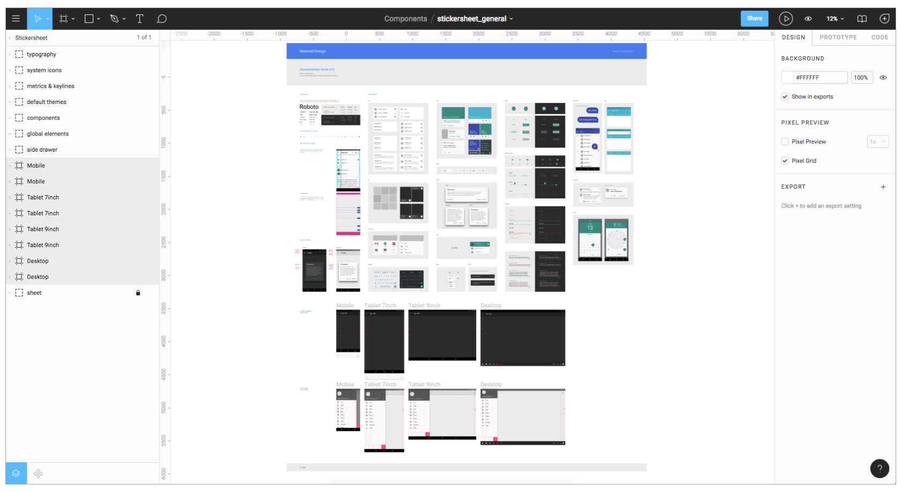

WEB DIZAJN
| Općenito | |
| Web dizajn obuhvata mnoge različite vještine i discipline u proizvodnji i održavanju web stranica. Različita područja web dizajna uključuju grafički dizajn za web; dizajn korisničkog sučelja (UI dizajn); autorstvo, uključujući standardizirani kod i vlasnički softver; dizajn korisničkog iskustva (UX dizajn); i optimizacija za pretraživače. Često će mnogi pojedinci raditi u timovima koji pokrivaju različite aspekte procesa dizajna, iako će neki dizajneri pokriti sve aspekte. Izraz "web dizajn" obično se koristi da opiše proces dizajna koji se odnosi na dizajn na prednjoj strani (klijentska strana) web stranice, uključujući pisanje markupa. Web dizajn djelomično se preklapa s web inženjeringom u širem opsegu web razvoja. Očekuje se da web dizajneri imaju svijest o upotrebljivosti i budu up-to-date s smjernicama za pristupačnost weba. |  |
| Alati i Tehnologije | Figma | Web dizajneri koriste različite alate u zavisnosti od toga u kojem dijelu proizvodnog procesa učestvuju. Ti alati se vremenom ažuriraju novim standardima i softverom, ali principi iza njih ostaju isti. Web dizajneri koriste i vektorske i raster grafike uređivače za kreiranje slika prilagođenih webu ili dizajn prototipa. Web stranica može biti kreirana korištenjem WYSIWYG softvera za izradu web stranica ili sistema za upravljanje sadržajem, ili se individualne web stranice mogu kodirati ručno na isti način kao i prve web stranice. Ostali alati koje web dizajneri mogu koristiti uključuju validatore markupa i druge alate za testiranje upotrebljivosti i pristupačnosti kako bi osigurali da njihove web stranice zadovolje smjernice za pristupačnost weba.
Dizajn korisničkog iskustva (UX) Jedan od popularnih alata u web dizajnu je UX dizajn, to je vrsta umjetnosti koja dizajnira proizvode kako bi pružila precizno korisničko iskustvo. UX dizajn je veoma dubok. UX je više od weba, veoma je nezavisan, i njegove osnove mogu se primijeniti na mnoge druge pretraživače ili aplikacije. Web dizajn se uglavnom zasniva na web stvarima. UX može preklapati i web dizajn i dizajn. UX dizajn se uglavnom fokusira na proizvode koji su manje web bazirani. |
 |
| Home Page | Primjer |
| Stručnjaci za upotrebljivost, uključujući Jakoba Nielsena i Kylea Soucyja, često su naglašavali dizajn početne stranice za uspjeh web stranice i tvrdili da je početna stranica najvažnija stranica na web stranici. Međutim, praktičari su u 2000-ima počeli primjećivati da sve veći broj posjetilaca web stranice zaobilazi početnu stranicu, direktno pristupajući internim stranicama sadržaja putem pretraživača, e-novina i RSS feedova. To je dovelo mnoge praktičare da tvrde da početne stranice nisu toliko važne koliko većina ljudi misli. Jared Spool je argumentovao 2007. godine da je početna stranica zapravo najmanje važna stranica na web stranici. U 2012. i 2013. godini, karuseli (također nazvani 'slajderi' i 'rotirajući baneri') postali su izuzetno popularan dizajnerski element na početnim stranicama, često korišteni za prikazivanje istaknutog ili najnovijeg sadržaja na ograničenom prostoru. Mnogi praktičari tvrde da su karuseli neučinkovit dizajnerski element i štete optimizaciji pretraživača i upotrebljivosti web stranice. |  |